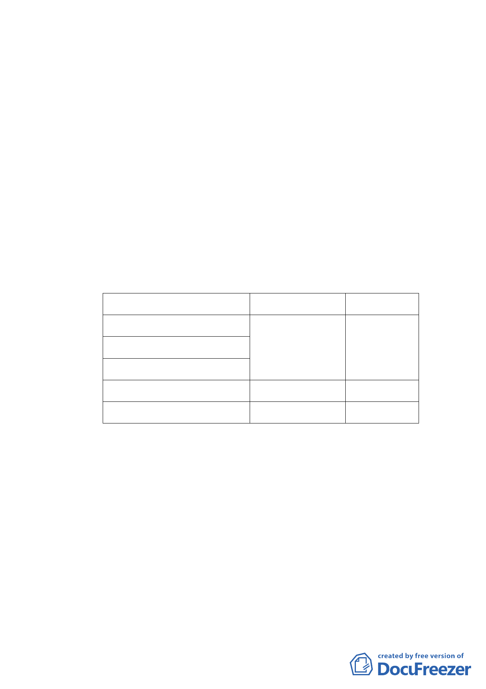

二、計畫範圍與面積
本計畫位於中山足球場所座落街廓，西臨玉門街、南臨
民族西路、東臨中山北路三段。變更主要計畫面積為 66,209
平方公尺，並就變更後之會展特定專用區擬定細部計畫，細
部計畫面積 66,197 平方公尺。
三、土地權屬與使用現況
本案土地權屬包括國有及市有，現行土地使用分區為體
育場用地、機關用地（供文化設施使用）及道路用地（酒泉
街）。
四、計畫內容
（一）變更主要計畫：土地使用分區及用地變更
原分區
變更後分區
面積（㎡）
體育場用地
會展特定專用區
66197
機關用地(供文化設施使用)
道路用地
道路用地
公園用地
12
66209
（二）擬定細部計畫：就會展特定專用區訂定土地使用管制及都
市設計管制。
1.建蔽率：不得超過 60％。
2.容積率：不得超過 280％。
3.允許使用項目：
（1）以臺北市土地使用分區管制自治條例第 15 組社教設
施、第 16 組文康設施之使用項目為主。
（2）得作藝術工作必要之非量產性產業製造行為，以及提供
作為文化產業展售處所及辦公空間、文化交流空間、多
-2-